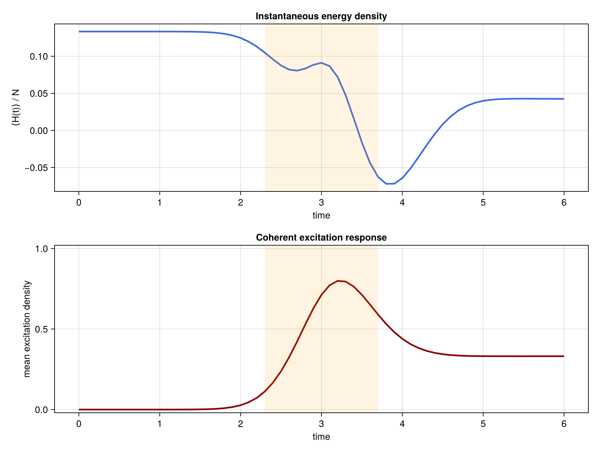

Laser-driven TDVP dynamics
Does a Gaussian pulse leave residual Up population in a closed Ising chain, and what does it do to the energy density? Excitation here means Up population in the $Z$ basis. The energy density is the expectation of the instantaneous Hamiltonian, divided by $N$.
The figure below is generated by scripts/laser_driven_tdvp.jl.
Laser-driven spin chain
With $\hbar=1$ and time in units of $1/J$,
\[H(t) = -J\sum_{j=1}^{N-1} Z_j Z_{j+1} -\frac{\Delta}{2}\sum_{j=1}^{N} Z_j +\frac{\Omega(t)}{2}\sum_{j=1}^{N} X_j ,\]
where the envelope is
\[\Omega(t) = \Omega_0 \exp\left[-\frac{(t-t_c)^2}{2\sigma^2}\right].\]
$X$ and $Z$ are Pauli operators on S=1/2 sites. The chain starts in $|\downarrow\cdots\downarrow\rangle$. The two recorded densities are
\[\bar n(t) = \frac{1}{N}\sum_{j=1}^{N} \left\langle\frac{I+Z_j}{2}\right\rangle_t , \qquad e(t) = \frac{1}{N}\langle\psi(t)|H(t)|\psi(t)\rangle .\]
$\bar n$ counts Up population. It is not the energy above the instantaneous ground state. $e(t)$ is that separate comparison.
Model and parameters
using ITensors
using ProcessTensors
using Statistics: mean
const N = 6
const J = 0.4
const detuning = 1.0
const Ω0 = 2.5
const pulse_center = 1.2
const pulse_width = 0.35
const dt = 0.1
const final_time = 2.4
const maxdim = 60
const cutoff = 1e-10
sites = siteinds("S=1/2", N)
initial_state = MPS(sites, fill("Dn", N))6-element MPS{Hilbert}
site dims: 2, 2, 2, 2, 2, 2
link dims: 1, 1, 1, 1, 1
maxlinkdim: 1
combiners: none
tensors:
[1] ((dim=2|id=815|"S=1/2,Site,n=1"), (dim=1|id=884|"Link,l=1"))
[2] ((dim=1|id=884|"Link,l=1"), (dim=2|id=523|"S=1/2,Site,n=2"), (dim=1|id=123|"Link,l=2"))
[3] ((dim=1|id=123|"Link,l=2"), (dim=2|id=932|"S=1/2,Site,n=3"), (dim=1|id=727|"Link,l=3"))
[4] ((dim=1|id=727|"Link,l=3"), (dim=2|id=784|"S=1/2,Site,n=4"), (dim=1|id=358|"Link,l=4"))
[5] ((dim=1|id=358|"Link,l=4"), (dim=2|id=542|"S=1/2,Site,n=5"), (dim=1|id=344|"Link,l=5"))
[6] ((dim=1|id=344|"Link,l=5"), (dim=2|id=3|"S=1/2,Site,n=6"))
laser_driven_hamiltonian(t) returns the OpSum at time t. Each TDVP step freezes the MPO of that operator at the midpoint of the step.
gaussian_drive(t::Real) =
Ω0 * exp(-((t - pulse_center)^2) / (2pulse_width^2))
function laser_driven_hamiltonian(t::Real)
H = OpSum()
for j in 1:(N - 1)
H += -J, "Z", j, "Z", j + 1
end
for j in 1:N
H += -detuning / 2, "Z", j
H += gaussian_drive(t) / 2, "X", j
end
return H
endlaser_driven_hamiltonian (generic function with 1 method)Midpoint TDVP evolution
On $[t_n, t_n+\Delta t]$ the step uses
\[H_{n+\frac12}=H\left(t_n+\frac{\Delta t}{2}\right), \qquad |\psi(t_{n+1})\rangle \approx \exp[-i\Delta t\,H_{n+\frac12}]|\psi(t_n)\rangle .\]
Two-site TDVP (nsite=2) lets the bond dimension grow. The loop builds the midpoint MPO and passes it to tdvp.
nsteps = round(Int, final_time / dt)
times = collect(range(0.0; step=dt, length=nsteps + 1))
trajectory = let
ψ = copy(initial_state)
energies = Float64[]
excitations = Float64[]
norm_errors = Float64[]
for step in eachindex(times)
H_now = MPO(laser_driven_hamiltonian(times[step]), sites)
z_values = real.(expect(ψ, "Z"))
push!(energies, real(inner(ψ', H_now, ψ)) / N)
push!(excitations, mean((1 .+ z_values) ./ 2))
push!(norm_errors, abs(real(inner(ψ, ψ)) - 1))
step == length(times) && continue
t_mid = times[step] + dt / 2
H_mid = MPO(laser_driven_hamiltonian(t_mid), sites)
ψ = tdvp(
H_mid,
-1im * dt,
ψ;
time_step=-1im * dt,
nsite=2,
maxdim=maxdim,
cutoff=cutoff,
outputlevel=0,
)
end
(
energy_density=energies,
excitation_density=excitations,
norm_error=norm_errors,
)
end
println((
N=N,
final_time=final_time,
final_energy_density=trajectory.energy_density[end],
final_excitation=trajectory.excitation_density[end],
max_norm_error=maximum(trajectory.norm_error),
))
@assert maximum(trajectory.norm_error) < 1e-8
@assert all(x -> -1e-10 ≤ x ≤ 1 + 1e-10, trajectory.excitation_density)
@assert all(isfinite, trajectory.energy_density)(N = 6, final_time = 2.4, final_energy_density = -0.22437452193024865, final_excitation = 0.7064102947281353, max_norm_error = 7.671173696266465e-10)
What the pulse does
The cells above use $N=6$, pulse center $t_c=1.2$, width $\sigma=0.35$, and end at $t=2.4$, with maxdim=60. The figure is the companion chain: $N=12$, $t_c=3.0$, $\sigma=0.7$, through $t=6$, with maxdim=100. Both use $J=0.4$, detuning $1$, $\Omega_0=2.5$, and $\Delta t=0.1$. The shaded band is one pulse width on either side of the center.

The excitation stays near zero until the pulse, rises through the shaded interval, and then falls to a nonzero residual. That fall is coherent evolution under the closing pulse. This Hamiltonian has no dissipator.
The energy density decreases through the pulse and becomes negative, so the drive extracts energy relative to the initial state. It then recovers part of that drop. After the pulse, $\Omega(t)$ is negligible and $H$ is diagonal in the $Z$ product basis, so the local $Z$ populations and the energy of that static Hamiltonian stop changing. The late plateau is that frozen coherent evolution.
When $J=0$ and $\Delta=0$, a product of spins that start in $|\downarrow\rangle$ has the pulse-area population
\[\bar n(t)=\sin^2\!\left[\Theta(t)/2\right], \qquad \Theta(t)=\int_0^t \Omega(s)\,ds .\]
The plotted chain has both $J$ and $\Delta$ nonzero, so that formula is the reference for the first edit below. A norm that stays near 1 does not establish that the peak or the residual has converged in $\Delta t$ or bond dimension.
These edits test the pulse-area law, the separate roles of width and detuning, and whether the peak and residual move when the step is refined. Rebuild the midpoint MPO and rerun tdvp from the initial product state.
- Set
J = 0anddetuning = 0. Compare $\bar n(t)$ with $\sin^2[\Theta(t)/2]$. - Keep the pulse area fixed and compare a narrow pulse with a broad one, on resonance and at nonzero detuning. Place the pulse tails inside the time window, and choose
dtso that the narrow pulse is resolved. - Halve
dtat fixed final time. Compare the peak excitation and the residual excitation. A smaller norm error is a separate check.